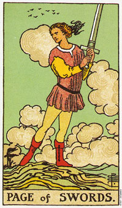

宝剑国王代表空气元素中土的部分。他象征实用的思考和构想。这张牌是在告诉你，你需要利用你的构想去做一些真实的事，并拥有一些物质的东西来代表它们。
宝剑国王可以代表占星学上的水瓶座，特别是当星星出现在牌面上时;而当和正义或女皇一起出现时则代表天秤座;如果是和恋人同时出现则代表双子座。
国王代表一个在心智上拥有自制能力的成熟男人。他深谙规画的价值，也明白思考和行动结合的重要性。他是一个拥有良好、清晰、实用构想的人，而且那些点子都经得起试炼和考验。他可能会太偏重实际思考，而对于那种未经合理化的感情则会显得无所适从。他是一个思想和目标有条不紊的人，也是个很好的组织者，以及倾向于从事管理他人的工作。
做生意、政治、法律和行政官僚等工作都会吸引他，而建筑和机械他也有兴趣。这个国王的外表可能是深色的头发和眼眸，不过探讨他的本质会比他的颜色来的可靠。
这张牌里面飞的比他还高的鸟儿显示出心智高飞的可能，他仍是稳坐于宝座之上，置身实际而可掌握的事物当中。他对于逻辑和实用主义的热衷，使他没有太多的空间去经历像侍卫那么丰富的感情和梦想。国王总是让有目的思考占满自己的脑子，不像侍卫喜欢把思考当作他从限制重重的真实世界里逃出来的方法。
就实际的角度来看，他的建议是值得遵循的，也喜欢从事法律方面的工作。他也适合像医药、科学、教学、传播、生意上的顾问及著述(非小说创作)等工作。
大体上的意义
宝剑国王代表对清楚的思想的追求、诚实，以及将只是倒入现实的需求。作为某个问题的答案，这张国王牌可以说是透过清楚而有效之计划而达到成功。他也可暗示健全的构想及经营会带来成功，因为拥有一像计划、目标和持续的努力，正是一个赢的组合。
这张牌可能暗示，有人正在对你做明确而合理的忠告。在牌面上当正义牌随同出现时，这张牌及暗示即将有一场官司要上场了。
两性关系上的意义
宝剑国王叙述一个思路清晰而务实的男人，他需要的伴侣是在心智上和他对人生有相同理解的人，而且要言行一致。他也可以代表一种有着明确目标，而且彼此心智能交融的两性关系。
倒立的宝剑国王
当这张牌倒立出现时，可能意味着丧失了清晰的思路。他或许是不成熟，或在精神上无法自制的，或甚至是残忍和狡猾的。当牌倒立时，他可能会变成心胸狭窄而虚伪的或精神涣散，对任何人或任何时都无法付出。一如骑士牌的倒立，他在两性关系上变得难以预料。他可能会跑掉好几天或几个礼拜，然后又再度出现，却不做任何解释，就好像什么事也没发生过似的。
他拥有一种自由挥洒的思考方式，然而尽管他的点子绚丽而创意十足，真正能落实的却极为有限，因为他缺乏执行和坚持的力量。由于他在表达自己，及自己的创意和构想上相当出色，于是他在那些对他并不熟悉的人的脑海中会留下一种深刻的印象，但如果要产生结果的话，最好是由宝剑皇后或五角星皇后来加以安排。五角星类型的人比较能够完成这个国王所着手进行的事。
就日常的角度来看，这张牌显示一个正立的国王正遭遇着困难或某种危机。而当他可以站起来的时候，他又会以一个正立的国王的姿态出现。宝剑国王和倒立可能意味着由于思绪和计划凌乱，又缺乏毅力，所以无法成功。
国王的倒立可以象征一种追寻自私动机的强烈念头。例如，一个野心勃勃的人，盘算或策划这如何攀上权立高峰。身为法律顾问，这个国王很可能建议罪犯钻法律漏洞，牺牲他人来致富。他够狡猾所以行藏不露痕迹，也可能因为自己的行为而去陷害别人。